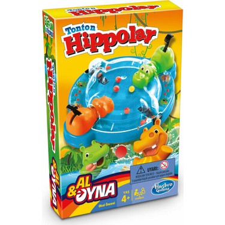

OYUNUN AMACI
Hippoların misketleri kapması için yarışın. En çok misketi kapan oyunu kazanır!
OYUNA HAZIRLANALIM!
-
Her Hippo’yu bulunduğu yerden kaldırın. Hippoların başlarındaki torbaları çıkarın.
-
Oyun alanının altındaki misket saklama bölmesinin kapağını çıkarın. Bir kenara koyun.
-
Oyun alanını çevirin. Her Hippo’nun gövdesinde iki çıkıntı var. Bu iki ucu oyun alanında gösterilen yere takın. Aşağı doğru bastırıp yerine yerleşmesini sağlayın.
-
Misketlerin fırlatıldığı alanı misketlerle doldurun. Altın Misketi herhangi bir boş kalan fırlatma alanına koyun.
-
Her Hippo’yu oyuna hazır hale getirmek için kuyruğunu aşağı doğru bastırırken aynı anda boynunu dışarı doğru çekip aşağı itin. Birkaç defa Hippo’nun kuyruğuna basıp bırakın.
NASIL OYNANIR!
-
Her oyuncu bir Hippo seçer.
-
Misket fırlatıcılara basarak tüm misketleri oyun alanının ortasına doğru fırlatın.
-
“1, 2, 3, başla!” diye bağırın. Tüm oyuncular misketleri kapmak için seri bir şekilde Hippolarının kuyruklarına bastırsın!
OYUN NASIL BİTER
Oyun alanında hiç misket kalmadığında oyun sona erer.
En çok misketi kapan oyuncu oyunu kazanır!
EKSTRA EĞLENCE!
Yukarıdaki kurallara göre oynayın, ancak bu sefer Altın Misket’i ilk kapan oyunu kazanır!